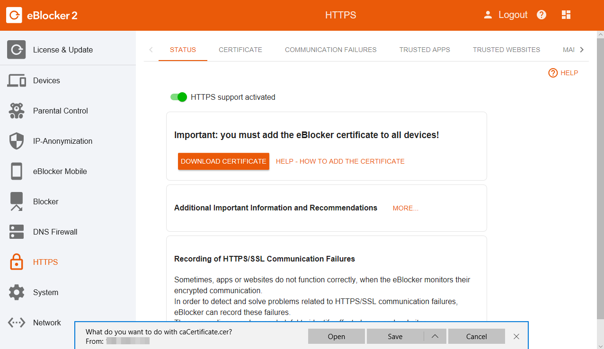
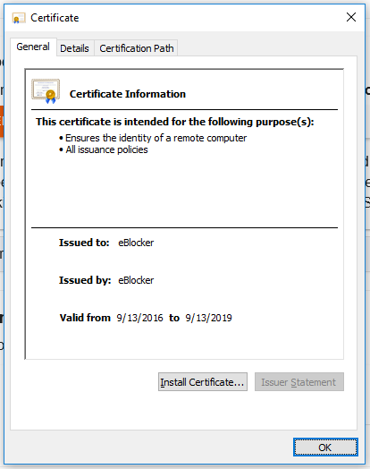
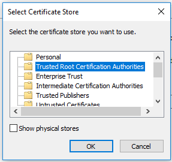

Deutsch | English
eBlocker Help > FAQs > HTTPS function (SSL/HTTPS)
How to add the eBlocker certificate in Windows.
With just a few steps you have stored the certificate. Please use the Microsoft Edge Browser, or the Microsoft Internet Explorer.
Open the eBlocker HTTPS configuration page, or the eBlocker Dashboard.
On the HTTPS configuration page, click the START HTTPS Wizard button, or on the eBlocker Dashboard in the HTTPS card, click the START HTTPS Wizard link.
The wizard will show you step by step how to store the eBlocker certificate in Windows.
Alternatively, you can store the eBlocker certificate without the wizard.
- On the HTTPS configuration page, click on the tab CERTIFICATE and then on the button DOWNLOAD. If necessary, you can also download the certificate by right-clicking on the button and then "Save as".
- In the dialog that appears, first click on Save and then on Open.

- Click on Install Certificate.

- The Ccertificate Import Wizard opens.
Here you have the following choice:
Current User
Local Machine
The "Current User" is your Windows user. With the "Local Machine" option, you store the eBlocker certificate for all users who can log on to this Windows computer.
- Please confirm your selection with Next.

- Select Place all certificates in the following store and click on Browse afterwards.

- Choose the second register Trusted Root Certification Authorities and confirm this process with OK.

- Click on Next in the Certificate Import Wizard and confirm the process with Finish.

- Confirm the following safety warning with Yes.
The eBlocker certificate is now inserted into Windows. Most of the browsers and programs can have access to the eBlocker certificate.
In the following browsers you should now have access to the eBlocker controlbar on HTTPS pages:
- Microsoft Internet Explorer
- Microsoft Edge
- Google Chrome
- Opera
- Vivaldi
- Yandex
The following browsers have their own certificate store. The eBlocker certificate has to be inserted in the according certificate store.
- Firefox
- Cliqz (based on Firefox)
- Seamonkey
- Thunderbird (email application)